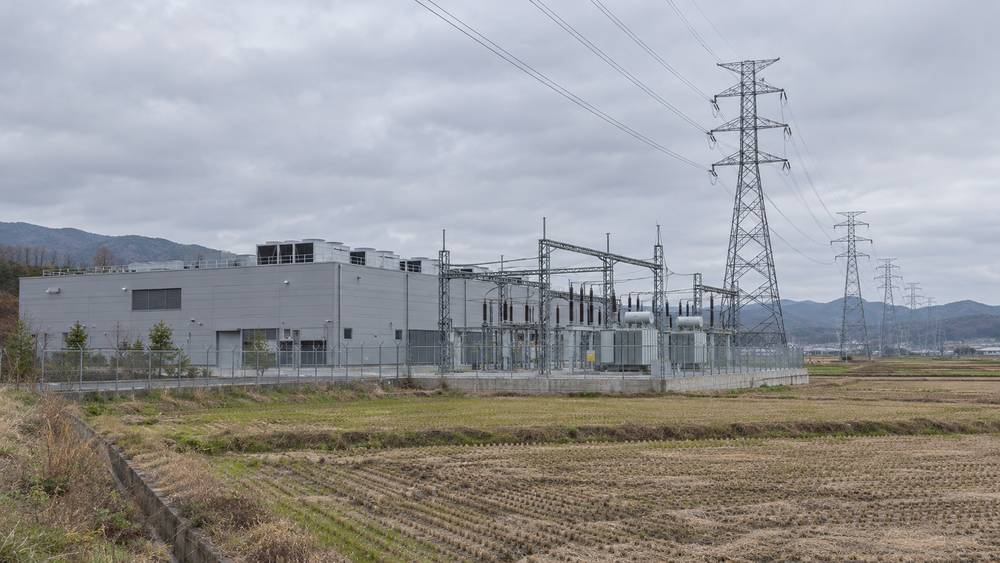

AI 데이터센터 계통평가 면제안, 비수도권 50MW 이하

특구 안 시설은 비기술적 평가를 빼고 기술적 평가만 받게 할 계획이다. 시행령 제정안 의견은 12월 30일까지 내고, 공청회는 12월 9일 열린다.
인공지능(AI) 데이터센터를 비수도권에 계약전력 50MW 이하로 지으면 전력계통영향평가 없이 세울 수 있게 하는 시행령안이 나왔다. 과학기술정보통신부는 11월 20일 이 기준을 담은 「인공지능 데이터센터 산업 진흥에 관한 특별법」 시행령·시행규칙 제정안을 입법예고했다. 같은 날 기후에너지환경부와 과기정통부는 특구 안 데이터센터의 평가를 줄이는 제도 개선도 함께 하기로 했다고 밝혔다.
두 부처는 면제 기준을 100MW로 높여도 메가프로젝트의 GW급 데이터센터는 대부분 면제 대상에서 빠진다는 점을 따졌다. 사업자가 비기술적 평가 준비에 시간을 많이 쓴다는 점도 고려했다. 정부 계획대로라면 특구에 들어서는 AI 데이터센터는 크기와 상관없이 비기술적 항목을 빼고 기술 항목만 평가받는다. 근거가 되는 기후부 고시 「전력계통영향평가 제도 운영에 관한 규정」도 손볼 예정이다. 특구를 분산에너지특화지역과 잇도록 한 특별법에 맞춰 두 특구의 연계도 강화할 계획이다(분산특구 가운데 '수요유치형'은 이미 비기술적 평가가 면제돼 있다). 메가프로젝트와 인허가 일괄처리를 신청한 데이터센터는 규모와 관계없이 평가를 먼저 받게 할 계획이다.
제정안에 따르면 AI 데이터센터로 인정받으려면 AI 장비전력이 250kW 이상이면서 전체 정보통신 장비전력의 50% 이상이거나 5MW 이상이어야 한다. 구축 신고만 하고 평가 면제 같은 특례를 선점하는 일을 막으려고 신고일부터 1년 안에 착공일을 정해 신고하도록 했다. 특구를 신청하는 지방자치단체는 특구 단위 전력계통 수용성과 지역상생·주민수용성 계획을 내야 하고, 과기정통부는 90일 안에 검토한다.
의견서는 12월 30일까지 이메일·우편으로 받고, 공청회는 12월 9일 서울 마포구 누리꿈스퀘어에서 열린다. 특별법은 2027년 3월 10일 시행되며, 정부는 하위법령도 이날 함께 시행할 계획이다.
시민에너지 관점
비수도권 50MW 이하 면제는 그만한 전력 수요가 계통 평가 없이 지역 전력망에 들어올 수 있다는 뜻이기도 하다. 제정안이 특구 신청 서류에 주민수용성 계획을 넣었고 정부가 2027년 상반기에 주변 주민 의견수렴 가이드라인을 만들겠다고 한 만큼, 그 기준이 서류에만 머물지 않아야 한다. 데이터센터가 쓰는 전기를 주민과 협동조합이 소유한 재생에너지로 채울 때 전기요금 밖의 이익도 지역에 남는다. 특구를 준비하는 지자체는 신청서보다 주민 참여 발전 계획을 먼저 세우자.
출처: 기후에너지환경부·과학기술정보통신부 2026-11-20 보도자료 「과기정통부-기후부, AI 데이터센터 신속 구축을 위한 전력계통영향평가 제도 개선 추진」(기후부 계통운영혁신과) 원문 보기
출처: 과학기술정보통신부 2026-11-20 보도자료 「「인공지능 데이터센터 특별법」 하위법령 제정안 입법예고」·붙임 1 제정안 주요 내용 원문 보기